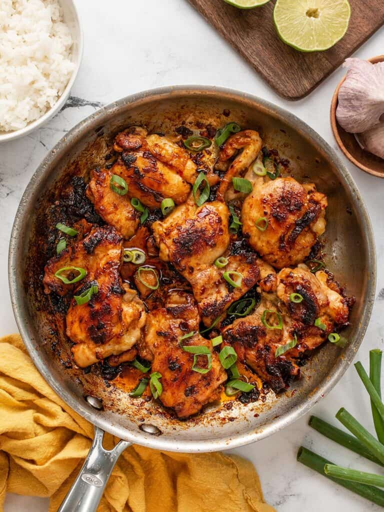

Chipotle Chicken
Introducing our delectable Chipotle Chicken recipe - a delightful and
wholesome meal with minimal effort required. This mouthwatering
chicken can be utilized in a variety of dishes, including tacos,
burritos, bowls, and fajitas. Simply personalize your culinary
masterpiece with a medley of your preferred toppings like lettuce,
salsa, rice, beans, cheese, or sour cream. Savor the flavors and
relish the simplicity of this scrumptious treat! Enjoy! üçóüåÆü•ó

Details
- Prep Time: 10 mins
- Cook Time: 5 mins
- Additional Time: 18 hrs
- Total Time: 18hrs 15mins
- Servings: 8
Ingredients
- 1 ounce dried chipotle chile pepper
- 1 ounce dried ancho chile pepper
- ½ cup water
- ½ red onion, cut into small chunks
- 4 cloves garlic
- 2 teaspoons sea salt
- 1 teaspoon ground cumin
- 1 teaspoon dried oregano
- 1 teaspoon freshly ground black pepper
- 2 tablespoons olive oil
- 2 ½ pounds skinless, boneless chicken thighs
Instructions
- In a shallow bowl, place chipotle and ancho chile peppers, then
pour in water. Cover the bowl and allow the peppers to soften at
room temperature for 10 to 12 hours. Once softened, drain the
water and remove the seeds from the peppers.
- In a blender, combine the softened chile peppers, red onion,
garlic, sea salt, cumin, oregano, and black pepper. Blend until
a coarse paste forms. Add olive oil to the mixture and continue
blending until the marinade achieves a smooth consistency.
- Take the chicken thighs and place them between two sheets of
heavy plastic on a solid, level surface. Use the smooth side of
a meat mallet to firmly pound the chicken to a 1/2-inch
thickness.
- Transfer the chicken to a resealable plastic bag and add the
prepared marinade. Turn the chicken several times to ensure it
is evenly coated with the marinade. Seal the bag and
refrigerate, allowing the chicken to marinate for at least 8
hours.
- Preheat an indoor grill with top and bottom plates to
medium-high heat.
- Remove the chicken from the marinade bag, discarding the
marinade.
- Place the chicken on the preheated grill, close the lid, and
cook for approximately 5 to 7 minutes, or until the chicken is
no longer pink in the center and the juices run clear. To ensure
the chicken is fully cooked, an instant-read thermometer
inserted into the center should read at least 165 degrees F (74
degrees C).
- Once cooked, cut the chicken into strips and serve it warm.
Back to home